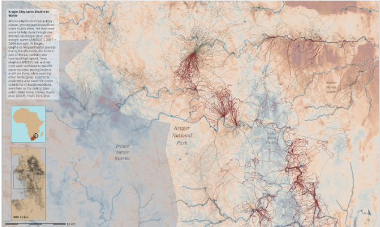
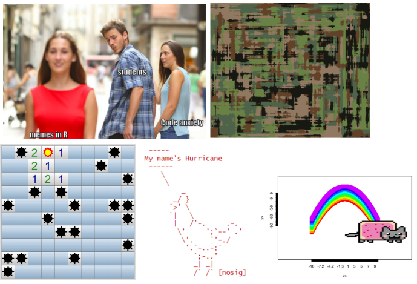

Overcoming coding anxiety: reflections and strategies
anxiety, coding, teaching
Coding is increasingly acknowledged as a core component of data analysis across disciplines, yet it is often presented to students as a tool rather than a primary focus of study. For these students, it is likely that they have no prior exposure to coding. These initial interactions will define a long-term relationship with programming, and as a consequence, how they navigate an increasingly data-centric world. Understanding and addressing barriers to learning coding is essential to support learning, and here we consider one major barrier: coding anxiety.
Coding anxiety, or programming anxiety is defined as ‘a psychological state engendered when a student experiences or expects to lose self-esteem in confronting a computing situation’ (Connolly, Murphy, and Moore 2009). It may be driven, in part, by other anxieties, such as computer anxiety (Chua, Chen, and Wong 1999; Meinhardt-Injac and Skowronek 2022) or statistics anxiety (Zeidner 1991), among others. While one may assume that “digital natives” (Bennett, Maton, and Kervin 2008) experience a lower level of computer anxiety, this assumption may not naturally translate to coding anxiety (Nolan and Bergin 2016). Factors such as variable exposure to coding, an over-reliance on connected digital ecosystems during childhood (How’s Life for Children in the Digital Age? 2025), or disciplinary background, may influence levels of anxiety. For example, different levels of coding anxiety exist for mathematics and biomedical undergraduate students (Miller and Pyper 2024), with the former finding coding to be more enjoyable, and hence having lower anxiety. More broadly, student identity and background can also contribute to anxiety-linked barriers to learning, such as gender (Forrester et al. 2022) or learning in a non-native language (Kaur and Newell 2024).
Given the multifaceted nature of coding anxiety (PAN and Harun 2025), here we draw on our collective experience of teaching coding, provide perspectives on coding anxiety, and offer strategies to mitigate it. We focus specifically on students for whom coding is not their core academic focus, but rather a necessary skill set required when taking classes involving statistics, data analysis, experimental design, and modelling.
Recognising and Refocusing Anxiety
Anxiety sustains itself through a self-perpetuating cycle (Mkrtchian et al. 2017). It is believed to start with a trigger (e.g., a bad experience), which leads to future avoidance of associated triggers in an attempt to feel some short-term relief (Hofmann and Hay 2018). However, avoidance can lead to heightened anxiety in the long term (Mkrtchian et al. 2017). Since the brain learns that avoidance decreases anxiety, even if only temporarily, it may eventually prevent engagement with the trigger entirely. If the trigger is computer code, then coding becomes something to avoid, and hence coding anxiety is born. In contrast, confronting the trigger can build confidence and reduce anxiety over time (Kampmann, Emmelkamp, and Morina 2018; Craske et al. 2014).
We believe that recognising coding anxieties upfront is an important first step towards demystifying it in the classroom. Once students realise that this is an identified problem, common to many rather than something affecting them alone, they are one step closer to overcoming it. Humour, including self-deprecating jokes, describing how, despite now being the teacher, you once suffered from coding anxiety, can go a long way towards making students feel better1. Cartoons may also be an effective way of making anxiety itself less daunting. If existing online content is not enough, and making cartoons is not one’s gift, AI-generated images could easily be created for that purpose - just make sure people have 5 fingers!
Given anxiety’s negative feedback loop, the best way to combat anxiety is to break this vicious cycle (Figure 2). As an instructor or teacher, this can be achieved by providing positive experiences with coding2. Importantly, after acknowledging that coding anxiety is real, the solutions to it should be presented along with how overcoming their anxiety will be supported, e.g., reflecting on personal experience. Offering your experiences and providing a very visible role could serve as a powerful catalyst for students to realise they can overcome their own coding anxiety too.
Gauging a class’s perception towards coding early should prove useful in lowering overall anxiety. Collecting information about a priori fears or causes of anxiety, including - but not exclusively - coding anxiety, as well as discussions about course expectations, provides clues to what might be good strategies to adopt. In-class feedback tools like Mentimenter, allow students to provide feedback anonymously and in real time to make the course more accessible in an informal, friendly, and interactive way. This helps generate useful ideas, including specific suggestions, for how to reduce anxiety. Additionally, having students reflect on how anxious they are about coding might allow them to identify shared problems and anxieties across the class; a problem shared is a problem halved.
Building Confidence Through Active Learning
Early hands-on activities focusing on the end product of coding, rather than the process of getting there has the benefit of demonstrating value without the need to actually code in the first instance. Even exercises where students simply copy-paste code, without knowing why it does what it does (but being told that later they will be able to code it themselves), could go a long way in reducing anxiety. Such exercises allow students to see how useful coding is for tasks they would like to do, but which would be impossible manually. Focusing on the outcomes students are interested in and can relate to makes them less reluctant to learn programming than if they just see it as a barrier. For example, one could take a couple of large datasets linked by a common variable and ask students to examine the files in a text editor and “understand” the data. Then the students can be given code to produce a captivating visualisation (e.g., Figure 3) with relevant insights for the subject matter of their course. Focusing on the reward, rather than the trigger, can lower anxiety (Xiao et al. 2022) and hopefully inspire students to create similar outputs themselves.

Having fun reduces anxiety in a wide variety of contexts, so why not try it for coding anxiety, too? Coding need not be boring! There are many resources that one can use to showcase how coding can be fun. Having fun coding will mean that when coding becomes required, students’ receptivity to it is increased. R packages like memer and mermery allow meme creation from within R, while generative art packages can produce abstract paintings from code (Figure 4). The R package fun makes games and activities accessible from within the R environment. As an example, the classic game Minesweeper can be played within R via a single line of code defining the size of the area and the number of bombs. All the above can be used to introduce, in an informal setting, the concepts of functions and arguments. At the end of a long coding session, or even during one, the package praise can also come in handy. A call to its single function praise() returns positive feedback like “You are wonderful!” or “You are supreme!”. These simple statements often put a smile on students’ faces, and based on our experience, that is halfway towards reducing anxiety. Finally, if students just can’t code but want to “fake it till they make it”, the R function look_busy() in the player package will produce output on the console that will make anyone else believe students are working hard (showcase it, but discourage its use!). We have used several of these approaches and provide them as a starting point, but given R is a dynamic and ever-evolving environment, other fun and engaging options must live out there waiting to be used by teachers to help reduce code anxiety.

In our opinion, live coding is one of the most effective tools to demystify programming and reduce coding anxiety. When instructors write, run, *and debug*, code in real time, narrating their thought process as they go (and getting error messages), they model both the practice and the mindset of coding. Students witness that even experienced coders make mistakes, encounter errors, and debug them systematically. This transparency transforms coding from a mysterious, high-stakes activity into a visible process of exploration, reasoning, and iteration.
Importantly, the approach taken during live coding matters as much as the content. Speaking aloud while typing, e.g., explaining why particular commands are chosen, predicting outputs before running them, and pausing to invite student predictions, turns what might otherwise be a passive demonstration into an interactive learning experience. When an error appears, embrace it as an opportunity to model problem-solving, showing that mistakes are normal, and even useful. Seeing how to respond to an error message with curiosity rather than panic can profoundly reframe students’ emotional response to failure.
To lower anxiety further, live coding should begin with simple, visually rewarding tasks. Plot a small dataset, calculate a mean, or clean a short table. This way, students can follow the logic without feeling overwhelmed by syntax. Gradually, the exercises can build in complexity, moving from replication to modification and finally to creative application. When possible, students can be invited to suggest the next line of code, predict what will happen if a parameter is changed, or even take over the keyboard for short stretches.
Finally, recording or providing annotated versions of live coding sessions allows students to revisit material at their own pace. This ensures that the spontaneity of live teaching is complemented by the reassurance of reviewable, structured notes. By combining openness, interaction, and a healthy acceptance of mistakes, live coding transforms what might otherwise be a source of anxiety into a collective, confidence-building experience.
There can be multiple approaches to teaching code and statistical data analysis, and some of these might improve or contribute to coding anxiety (Colquhoun et al. 2026). Conventional wisdom suggests that the first step is the hardest for any journey. In our experience, starting with small, manageable, and clearly described tasks, will make the initial experience with coding positive, which will in turn decrease anxiety levels when facing harder tasks. This is consistent with the strategy suggested by (Auker and Barthelmess 2020). Later classes or assignments may contain less detailed guidance or be more open-ended, allowing students to explore their new found confidence in their coding abilities at their own pace.
Support and Collaboration Beyond the Classroom
Coding confidence grows most effectively outside of formal teaching time. Low-pressure practice, whether collaborative or individual, helps students reinforce skills and approach coding with curiosity rather than fear. This can be supported by structuring opportunities for independent study and peer interactions that sustain progress between classes. One simple but effective technique is to encourage students to maintain a short ‘coding diary’, allowing for normalisation of occasional frustration and celebration of key achievements.
The fear of revealing a lack of coding ability can be a powerful barrier, discouraging students from even attempting new exercises and progressing in their learning. Independent work outside the classroom, supported by carefully developed additional materials, can help overcome this. Providing a list of such resources will empower students to learn on their own. In our experience, a particularly interesting resource comes via the R package swirl. Swirl “teaches you R programming and data science interactively, at your own pace, and right in the R console!”. Contents can be explored independently, or by following the prompts of a ‘virtual tutor’ (#TODO link to generative AI chapter). Students are amused by a virtual tutor calling them by their name, meaning that they engage with the learning experience in a positive mood.
Sharing the learning journey with others can be equally powerful. The mantra “a problem shared is a problem halved” can be operationalised while teaching programming via pair-programming (TODO link to other chapters). Pair-programming is a useful strategy to lower coding anxiety levels (Fan et al. 2025). Nonetheless, these are not universal findings; for example, (Krizsan and Lambic 2024) found that while performance improved, it did not reduce anxiety levels. Online pair-programming might be less intimidating for some, although it is not clear whether the benefits associated with live pair-programming apply (Hafeez et al. 2023).
AI-assisted pair-programming, where a coder is paired with an AI agent, has become an accessible alternative to human-human pair-programming (Fan et al. 2025). This might be easier for students who would otherwise be reluctant to expose their difficulties to a colleague. While AI-assisted pair-programming has been shown to enhance motivation, reduce anxiety, and even improve performance, it does not fully match the collaborative depth and social presence achieved through human-human pairing (Fan et al. 2025). Regardless of the pair-programming mode considered, we believe that if well thought out and prepared, pair-programming activities can be used to lower coding anxiety levels in a range of students.
Students can be encouraged to further their learning journey by ‘teaming up’ with peers to continue to pair-programme outside of the classroom environment. This can help alleviate coding anxiety both through additional assistance in a familiar mode and also through the mechanism of shared endurance and a head-on approach to the anxiety barrier.
Ultimately, support beyond the classroom requires fostering autonomy and connection in equal measure. When students know they can access help, whether from peers, teachers, lecturers, or AI tools, they are less likely to interpret difficulties as personal failings. Instead, they begin to view coding as a shared and iterative process that need not come with coding anxiety but natural failure and success routines.
Key Takeaways
Coding anxiety is real, especially in students for whom coding isn’t a core part of their disciplinary focus. This barrier should be recognised, and we have both a responsibility and an opportunity to normalise it in teaching settings and explain why and how the anxiety cycle can be broken. Overcoming coding anxiety should be presented as a personal endeavour, but one that instructors and peers, along with a growing number of resources, can support. For a teacher, effective methods for breaking the anxiety cycle are as pedagogically important as content creation. Instructors can become “anxiety diffusers”, starting by exploring ways to provide rewards from coding activities. In particular, activities that allow students to see the potential and value of coding to achieve tasks they are inherently interested in should be considered. Providing encouragement and additional resources for learning how to code, and promoting additional high-rewarding coding activities, are likely to help further. Strategies to share the burden, like pair-programming, could further boost self-confidence in coding. Overall, different audiences and topics will require slightly different approaches, so engaging with students and intervening using the strategies discussed above will be fundamental for reducing coding anxiety and improving learning.
Funding
TAMs work is partially funded by national funds through FCT – Fundação para a Ciência e a Tecnologia, I.P., under CEAUL Research Unit, UID/00006/2025, DOI: https://doi.org/10.54499/UID/00006/2025
References
Even if you’ve never experienced coding anxiety - lucky you; most of us have, at least to some extent - do take one for the team, and say you have too.↩︎
For some of us, ease with coding developed through repeated practice and the satisfaction of automating otherwise repetitive tasks. For others, it emerged more gradually and holistically, as their overall perception of coding improved over time through continued engagement.↩︎